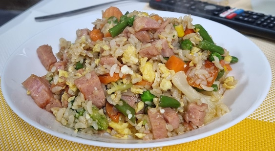

Spam Fried Rice

Description
This is a quick and simple way to make spam fried rice. Since most of the ingredients are pre-cooked, it's very low prep.
Ingredients
- 2 containers of pre-cooked ready-to-microwave rice
- 3 Eggs
- Frozen vegetables: California mix (peas, carrots, corn)
- Spam - large size
- Soy sauce
- Oyster Sauce
Steps
- Scramble the eggs, cooking them just enough and remove from pan
- Microwave the frozen vegetables for 1 minute, check it, and add another minute if necessary
- Add your vegetables to the pan
- Add diced spam to the pan
- Cook the vegetables and spam
- Add pre-cooked rice
- Add about 2 large spoonfuls of soy sauce and 1 spoonful of oyster sauce
- After it seems cooked and mixed well, add your cooked eggs
- Add more soy sauce and oyster sauce to taste
- Mix well
- Serve
home